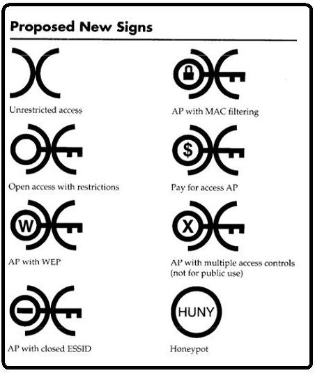

Over the course of this blog post, I shall be talking about the different kind of cyber attacks that a network is vulnerable to. In this particular blog post; I shall be outlining the following attacks:
Starting with DDOS/DoS attacks. The difference between a DOS and DDOS attack is the scale of it; an attack that's only being preformed by one computer is a DOS attack; however an attack that's taking place involving more than one computer (Usually carried out by botnets) These attacks are DDOS attacks. The most common way of preforming these attacks is by "ping flooding" This is done via IMCP ping requests, and it works by sending 1000's of ping requests per minute in hope that the end user doesn't have enough bandwidth in-order to respond to them all. There's also the "ping of death" which doesn't work on mordern day systems due to the vulnerability being patched out in any modern operating system. The way in which the "ping of death" attack works; is by sending an IMCP packet with a header size larger than 65,536 bytes. The reason being, is that this is the maximum size that a header is aloud to be; anything exceeding that older operating systems didn't know what to do with considering they'd been coded to only accept network traffic that has a header of 65,536 bytes or less. Therefore; this attack would cause the victim to either freeze, crash or reboot. The results were different everytime; however it was a sure way of causing disruption and was a popular attack among hackers and script kiddies.
Moving onto a Smurf Attack, is a form of DRDoS attack (Distributed Reflection Denial Of Service Attack) That involves spoofing the source address of ICMP requests. The way in which this is done is through an amplification network; that changes the source IP address of the IMCP request; that source IP address is changed to your victims. The simple way that this works; is that the attacker sends IMCP requests to the amplification network, once recieved by the network it spoofs the sender address to a victims IP address and then sends 1000s of response packets to the IMCP requests that the attacker had originally sent (and was meant to recieve) However; considering the packets will only be sent via 1 IP address; it is easy in order to prevent a smurf attack with a firewall, or even ringing up your ISP provider and reporting the IP address and not allowing it to connect or make any IMCP requests to that IP address again. If your victim doesn't have very good security and doesn't have a knowhow of how networks work and how to prevent these kinds of attacks; a smurf attack is extremely effective.
Now I'm going to be talking about SYN Flood attacks; these attacks are usually referred to as "half-open attack" This is due to the nature of the attack and how it works; the way in which this attack operates is by hording a servers resources from legitimate users, this is done by sending thousands of SYN requests to all open ports on that particular machine; as a result of this the machine will either stop accepting traffic completely or process requests extremely slowly. An SYN attack is most effective when carried out by a botnet; however it can be preformed by a singular user with a simple script and prior knowlage on the system beforehand via port scanning (scanning to see which ports are open on a network)
Moving onto SQL Injection attacks; these attacks involve using SQL based forms and inputting SQL syntax, by doing this the attacker could potentinally reveal sensitive information such as users email addresses, usernames and passwords. The easiest way of seeing weather or not a database is vulnerable from this type of attack; would be by inputting a quote. As this would return an error instead of an invalid username/password prompt. Another way would be inputting values such as "1=1" and seeing if the form outputs anything different. In order to prevent these attacks; the querys that are required to be executed are usually written into different variables, and then once that query is written into a variable they're then executed; the contents of the query cannot be modified and it makes your SQL less prone to injection attacks.
Now looking at Fraggle Attacks; these attacks are very much the same as Smurf attacks; however the difference is instead of IMCP requests being sent to the spoofed reciever; UDP traffic is sent. This attack has the same effectiveness as a smurf attack. A successful fraggle or smurf attack will cause a server to be down for hours/days at a time. They're also extremely hard to track the culprit of the attack due to the nature of them; considering that even the original traffic will also be sent to a VPN before it's sent to an amplification network.
Bluesnarfing is an attack that steals information from devices that have "bluetooth" functionality, the way in which this is done; is that a bluesnarf tool connects to the device via the OBEX protocol; this protocol is commonly used for exchanging information between devices, a common example of the use of the OBEX protocol would be apple iphones; and how when you first set them up you've got the choice of setting up the settings from a previous device by holding the old device new the near one; this is done via bluetooth using the OBEX protocol. Once the bluesnarf tool has connected, anything on the device can be accessed. Such as contacts, call logs, calander events and text messages. The dangerous thing about a bluesnarf attack is that it leaves no trace behind whatsoever, meaning that you could've been attacked and not known about it. There is no known prevention against a bluesnarf attack; as a result everyone is advised to keep their bluetooth off while they're not using it to prevent being victim.
Rouge access points are access points that don't have any sort of password tied to them and have no sort of encryption. These access points belong to buisnesses and are usually setup by mistake by network administrators for testing purposes; or for personal use on a laptop/mobile device. These access points are usually cabled into the main network; as well as bypass any firewall settings that are currently active on the network due to it being a hotspot of the main network; where no firewall settings are present. It posses a massive threat to the network as a whole due to the fact that all traffic that takes place on the network can be seen due to the lack of encrpytion.
Sniffing is a technique of capturing all data that's being transmitted over the network. This is commonly used by network administrators in order to diagnose issues with users being unable to send/recieve packets from particular services. However; sniffing tools can also be used to view data that's being exchanged to networks that don't have encrpytion active. For example; cpanels for websites usually don't have active SSL certificate, meaning that if an attacker was to gain access to a network and start using a network sniffer while a user on the network was trying to login to their cpanel; then the attacker would then be able to see that request in plain-text of the username and password being exchanged to the server, due to no encrpytion taking place on the original request. A VPN would counteract this attack, considering that the request would first go through the VPN server that is encrpyted, and then the request would go from the VPN server to the cpanel server to cheeck the authentication details.
Wifi war chalking is physical notation on surfaces around towns and cities that indicate that a WiFi network is nearby, usually this is used to connote that an unrestricted access point is nearby; usually "war chalking" is used to indicate to hackers in the area that there's an access point nearby that can be attacked. An example of a war chalking key can be found below.
Fianlly, I shall be talking about DNS poisoning. DNS poisoning is an extremely hard but effective attack if carried out correctly; the way this attack works is by gaining control of a DNS server; this is usually done by infecting the initial DNS server with a worm; once infected it allows for the attacker to change that DNS server to re-direct to any website of the attackers choosing. This is commonly used for phising. DNS servers are used to redirect users to the appropiate websites, every single website that you go to has a hidden IP address behind it called a DNS; meaning if someone was to take control of the server that DNS is hosted on, whenever someone visits "google.com" for example; it could actually redirect to "g00gle.com" which is a phishing website that tries to get you to login to your google account; once your details are entered into that fake google account login, your details will be sent to the hacker which then has full access to that account.